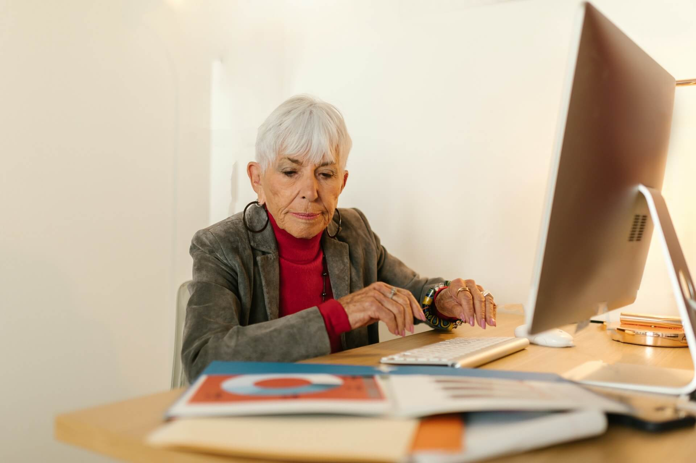

Todo comenzo hace un año
Aún me cuesta entender que todos somos buenos en algo o, incluso en
muchas cosas; Todo empezo hace un año, cuando mi mente colapso y
sentí una gran ansiedad por el futuro, quería hacer de todo pero a
la vez nada.. primero prove un poco de Marketing Digital, me gusto
pero sentí que no era ese el camino, me sentí frustrada por un buen
tiempo, hasta que tome la desición de soltar mis miedos y provar
otros destinos. Curiosamente siempre estuve rodeada de personas que
se interesaban por la tecnología, sin embargo, nunca me atreví a
descubrir si ese era mi camino. Me considero una persona creativa,
me encanta pintar, bailar y disfruto con locura poder crear con mis
manos, desde manualidades, hasta letras divertidas con lettering,
tenía la percepción de que nada me daria tal felicidad y ha sido
todo lo contrario.
Empencé a estudiar programacion desde hace 3 meses y he podido
descubrir capacidades que no creí tener, mi confianza en mi misma ha
aumentado, mis ganas de crear crecen con los dias pasar, siento una
sed de aprender que no puedo saciar, aún así se que me debo
controlar. Gracias a esta nueva desición, puedo pensar en contruir
una vida nueva, diferente y sín algunos límites porque entendí que
aunque vaya a mi propio ritmo lo que importa es el proceso, el viaje
y la enseñanza que este me pueda dejar.
Mi mensaje para ti es, atrevete, prueba todo aquello que incluso jamás pensarias en hacer, quizá la oportunidad que buscas esta en probar cosas nuevas y diferente, atrevete y no pienses en el tiempo o en la edad.
La edad no define a una persona
He conocido personas de tercera edad con un alma tan llena de vida como la mía o la tuya, la edad no puede significar limitación o metas incumplidas, lo que deberia importar es el valor que esa persona puede ofrecer.
Otra de las razones por las que muchas personas no se atreven a intentar algo nuevo, es por la edad, envejecer es vivir. Comenzamos a envejecer desde el mismo momento de nacer. Unas células mueren antes que otras, y la vida es un continuo nacer y morir. Es raro morir por ser viejo; de hecho durante la vida se van acumulando agresiones externas que causan enfermedades, y al final, de una de ellas se muere. La vida no tiene que ser fácil para ser maravillosa. De hecho, la vida fácil es el camino más corto hacia la monotonía. El trabajo debe concebirse en todo momento como un medio de realización personal, aún en los años de vejez. La persona retirada debe conservar siempre el derecho a ser útil ya serlo con dignidad. Cada individuo debe descubrir a tiempo sus capacidades y limitaciones.
El envejecimiento está directamente relacionado con la manera como la persona satisface sus necesidades a través de todo el ciclo vital. En la actualidad estamos asistiendo a “un nuevo colectivo de AM”: un número creciente de personas que cada vez están alcanzando edades más avanzadas en mejor estado de salud, con mayor lucidez y energía suficiente como para optar a otras actividades por un período más prolongado de su vida. Esto, sumado a que cada vez tienen más claros sus derechos reivindicativos los lleva a plantear nuevos desafíos aspiraciones, oportunidades ya una reflexión profunda e integral respecto a cómo deben mantener su percepción en la calidad de vida. Pero, lamentablemente aún en pleno siglo XXI, nuestra actual sociedad los obliga a enfrentarse a escenarios de inequidad, asimetría y exclusión social.
Si aún tienes sueños, metas y objetivos, tienes vida y si haz perdido el rumbo de la vida, es otra razón más por que debes vivir con mayor intensidad.